Influencia de la topología y topografía sobre la diversidad de plantas en los Valles profundos del río de Moldavia
Autor/a
Josué Mendoza Hewitt & Jhonatan Diaz Camargo
Fecha de publicación
8 de octubre de 2024
Introducción
Las técnicas multivariadas han sido ampliamente utilizadas en la biología y ecología, permitiendo la caracterización o clasificación de las comunidades biológicas considerando la variación en la estructura comunitaria entre las unidades de muestreo, a la vez que se puede evaluar la influencia de gradientes ambientales sobre esta variación. Esto es posible gracias a que estos análisis permiten dilucidar patrones que brindan información sobre la relación de múltiples elementos inherentes a estos sistemas naturales, facilitando la interpretación de generalidades y especificidades de estas relaciones (Borcard et al., 2011; Palacio et al., 2020; Rodríguez-Barrios, 2022). Además, la aplicación de estas técnicas multivariadas por medio de algoritmos computacionales han facilitado que estos se vuelvan cada vez más sofisticados en sus calculos, permitiendo que existan métodos cada vez más eficaces según las bases de datos y objetivos de estudio (Ayoub-Hannaa et al., 2013; Li et al., 2022).
Por esta razón, para el presente trabajo de caso se dispone de una base de datos de acceso público para la aplicación de estas técnicas multivariadas, la cual consiste en un estudio de los vegetación en valles profundos del río de Moldavia en República Checa, donde se tomaron valores de cobertura de cada especie de planta en las unidades de muestreo o parcelas, a la vez que se midieron variables topográficas, topológicas y medidas indirectas de los niveles de nutrientes, continentalidad, humedad, temperatura y reactividad en las parcelas (Ellenberg, 1974, 1979). Este estudio se realizó con el objetivo de probar las predicciones del “fenómeno fluvial” por métodos cuantitativos, el cual mencionaba una serie de observaciones sobre los patrones de vegetación en estos ecosistemas Türk (1994), entre ellos, se destaca la observación de que la distribución y riqueza de los vegetación no es aleatoria. Al ser los patrones de vegetación dependientes del ambiente es posible que estas puedan presentar una influencia similar entre dos o más ecosistemas independientes, tal cual como Zelený & Chytry (2007) encontró en los valles del Río de Moldavia y el Río de Dyje.
Las técnicas multivariadas aplicadas en este caso permitieron revelar información importante para el entendimiento de la interacción ambiente-vegetación en el macizo de bohemia, por lo que es un indispensable entender los fundamentos de estos métodos de manera practica y teórica, para comprender su plausibilidad ante otros casos de estudio.
Contextualización de base de datos
Variables biológicas
Las variables biológicas consisten en las abundancias estimadas para cada especie en cada una de las parcelas, estas abundancias se habrían estimado utilizando la escala ordinal de Braun-Blanquette con 9 grados, y transformándolo en escala porcentual.
Variables ambientales
PLOT y TRANSECT: La variable “plot” sería la parcela correspondiente al muestreo y “TRANSECT” sería al transecto al que pertenece la parcela muestreada.
Variables de topografía
ELEVATION: Datos de elevación sobre el nivel del mar.
SLOPE: Datos del grado de inclinación de las parcelas representado en porcentajes, por lo tanto un angulo de 0° de inclinación es 0% y uno de 90° es 100%.
ASPSW y ASPSSW: Corresponden a datos de la orientación de la parcela, al ser de escala circular se mide la desviación con respecto a una dirección de referencia siendo 22.5° para APSSW, y 45° para ASPSW.
XERSW y XERSSW: corresponden a índices de carga calorífica calculados partir de la pendiente de la parcela y la orientación, la primera corresponde al índice calculado con la orientación de la parcela para el ángulo de referencia de 45°, mientras que XERSSW con la orientación para el ángulo de referencia de 22.5.
SURFSL y SURFIS: Los valores de la “SURFSL” representan la forma del relieve en dirección hacia la pendiente mientras que los de “SURFIS” sería la forma del relieve pero teniendo en cuenta isohipsas, que básicamente sería una línea entre dos puntos que se encuentran a una misma elevación, siendo esta línea la que define la dirección a la que se describe la forma, de manera que ambas variables pueden tener solo tres valores numéricos posibles para cada unidad de muestreo que correspondan a categorías de forma, por lo que esta sería una variable categórica transformada a numérica:
1: Convexa
0: Plana
-1: Cóncava
Condiciones del suelo
LITHIC: Esta variable se asocia con la condición del suelo que es poco profundo y se encuentra a inmediaciones de afloramientos rocoso, siendo importante porque sabe esta condición puede hacer que existan valores subestimados de profundidad del suelo cuando se mide con una barrena. “LITHIC” es una variable binaria siendo los 0 “no” y los 1 “sí”.
CAMBISOL: Esta variable se asocia con el buen desarrollo de las zonificaciones del suelo. “CAMBISOL” es una variable binaria siendo los 0 “no” y los 1 “sí”.
FLUVISOL: Esta se asocia a los suelos influenciados por el agua y formados a partir de depósitos aluviales. “FLUVISOL” es una variable binaria siendo los 0 “no” y los 1 “sí”.
SKELETIC: Variable asociada a suelos extremadamente pedregosos formados sobre acumulaciones de derrubios o escombros rocoso. “SKELETIC” es una variable binaria siendo los 0 “no” y los 1 “sí”.
SOILDPT: Esta variable cuantitativa corresponde a la profundidad del suelo transformada a escala logarítmica dado a que se presento sesgo en los datos. Siendo el promedio de 5 valores medidos en diferentes partes de la parcela.
pH H: Es una variable cuantitativa continua, que va en escala de 1 a 14 pues se refiere al pH reactivo del suelo, que es una medida de la acidez o alcalinidad obtenida de una solución acuosa con las muestras del suelo.
Variables de la vegetación
COVERE32: se refiere a la cobertura estimada del estrato de árboles y arbustos para parcela, expresada como un variable cuantitativa de escala porcentual (%).
SPEC-NO: Numero de especies por parcelas, tomando herbáceas, arbustos y arboles.
GROUP: Esta variable clasifica a cada parcela el tipo de ensamblaje a partir de análisis de conglomerados de composición de hierbas, arboles y arbustos que se encuentran presentes. Esta clasificación se representa numéricamente.
Variables del sistema de indicadores de Ellenberg (ELL-LIGH,T ELL-TEMPER, ELL-CONT, ELL-MOIS,T ELL-REACT y ELL-NUTR): Son un conjunto de valores desarrollados por el ecólogo Heinz Ellenberg para indicar las preferencias ecológicas de plantas respecto a factores ambientales específicos, como la luz, la temperatura, la humedad, la continentalidad, la humedad, la reactividad del suelo y nutrientes. Estas suelen ir en la escala de 1 a 9, y cada uno de los valores de estas variables sería el promedio de los índices de ellenberg para las ¿especies presentes en la parcela.
Pregunta de análisis
¿Cual es el efecto de la topología y topografía sobre la composición de los ensamblajes de vegetación de plantas en los valles profundos del río de Moldavia?
Objetivos
Evaluar la relación entre las variables ambientales en los valles profundos del río Moldavia.
Determinar diferencias en las condiciones de habitats entres los tipos de vegetación de plantas en los valles profundos del río Moldavia.
Evaluar el efecto de las condiciones ambientales sobre la diversidad de plantas en los valles profundos del río Moldavia.
Hipotesis
1) Objetivo 1:
Ho: No existen relaciones entre las variables topográficas, topológicas y las condiciones de hábitat en los valles profundos del río Moldavia.
Ha: Existen relaciones entre las variables topográficas, topológicas y las condiciones de hábitat en los valles profundos del río Moldavia.
2) Objetivo 2:
Ho: No existen diferencias entre los tipos de vegetación de plantas de los valles profundos del río Moldavia en función de sus condiciones ambientales, riqueza, cobertura vegetal y composición.
Ha: Existen diferencias entre los tipos de vegetación de plantas en los valles profundos del río Moldavia en función de sus condiciones ambientales, riqueza, cobertura vegetal y composición.
3) Objetivo 3:
Ho: La topografía y la topología no influyen en la variación de la composición de los vegetación de plantas en los valles profundos del río Moldavia.
Ha: La topografía y la topología influyen en la variación de la composición de los vegetación de plantas en los valles profundos del río Moldavia.
Preparación de los datos
Cargue de librerias y bases de datos
Código
library(psych)library(readxl)library(ellipse)library(corrplot)library(Hmisc)library(ggplot2)library(readxl)library(corrplot)library(knitr)library(gridExtra)library(ggplot2)library(gridExtra)library(grid)library(patchwork)library(kableExtra)library(tidyverse)library(reshape) datos_env <-read_xlsx("C:\\Users\\Asus\\Desktop\\Analisis multivariado\\Informe-final-de-multivariada\\Base de datos y contextos\\vltava.xlsx",sheet ="Vltava-env data")datos <-read_xlsx("C:\\Users\\Asus\\Desktop\\Analisis multivariado\\Informe-final-de-multivariada\\Base de datos y contextos\\vltava.xlsx",sheet ="Vltava-species")
Organización de las bases de datos
En la matriz de datos biológicos las variables que son las especies se presentan como filas, mientras que las unidades de muestreo que son las parcelas estarían en columnas por lo que se debe realizar una transposición de la matriz original.
Código
#Se transpone la base de datos dejando las parcelas como filasdatos_bio <- datos[,-1]datos_bio <-t(datos_bio)colnames(datos_bio) <- datos$...1write.csv(datos_bio,file ="datos_bio.csv")
En la matriz de datos ambientales simplemente se debe organizar las variables y generar un cambio de los nombres para la visualización.
Código
# Preparamos la base de datos ambientales colnames(datos_env) =c("Parcela","Transecto","Elevación","Pendiente","Orientación.SE","Orientación.S.SE", "CCSE","CCS.SE","Superficie.PD","Superficie.ISO","Lítico","Esqueletico","Cambisoles","Fluvisoles","P.del suelo","pH","Cobertura veg.","Luz","Temperatura","Continentalidad","Humedad","Reactividad","Nutrientes","Riqueza sp","Grupos")datos1 <- datos_env[,c("Parcela","Transecto","Elevación","Pendiente","Orientación.SE","Orientación.S.SE", "CCSE","CCS.SE","Superficie.PD","Superficie.ISO","P.del suelo","pH")]datos2 <- datos_env[,c("Lítico","Esqueletico","Cambisoles","Fluvisoles", "Cobertura veg.","Luz","Temperatura","Continentalidad","Humedad","Reactividad","Nutrientes","Riqueza sp","Grupos")]datos_env <-cbind(datos1,datos2)write.csv(datos_env,"vltava_env.csv")row.names(datos_env) <- datos_env$Parceladatos_env <- datos_env[,-1]
1. Evaluar la relación entre las variables topográficas, topológicas y las condiciones de hábitat (índices de Hellinberg) en los valles profundos del río Moldavia.
-Relación entre variables topográficas y topológicas
A partir de correlogramas se puede tener una vista general de la relaciones entre las variables, visualizando el grado de correlación con el indice de Spearman y el nivel de significancia de estas relaciones. Por ejemplo, la Figura 1 refleja la estrecha relación positiva entre las variables de orientación sureste y la orientación sur-sureste con un valor de 0.83 de correlación entre sus datos con el mayor nivel de significancia(p-value<0.001), así mismo pasaría con los indices de capacidad calorifica que se derivan de estos, los cuales tienen una correlación positiva entre si, en la que las variaciones de uno se explicarian por las variaciones del otro en el 0.79 de los datos, esto se entiende ya que el cambio en la orientación sureste entre las parcelas también deberia ser acompoñada por cambios en la orientación sur-sureste. El tipo de relieve a favor de la pendiente tiende a ser más convexa a medida que aumenta la altitud, esto se evidencia por un grado de correlación del 0.62 . Entre los tipos de suelo, el fluvisol tiene una correlación considerablemente negativa con la altitud y las superficies en dirección a la pendiente (-0.62 y -0.67), teniendo el mayor nivel de significancia. A continuación se realizará una exploración visual de las relaciones con el mayor nivel de significancia y con un grado de correlación mayor al 60%.
Código
#Seleccionamos entre grupos de variablestopo <- datos_env[,2:15]#Seleccionamos solamente las variables topográficas y de suelo.ellin <- datos_env[,c(17:22)]#seleccionamos solo las variables indices-ellinger.riqueza_cob <- datos_env[,c(16,23)]#-----------------------------------------------------------------------#Generamos las matrices de correlación para analisis topocor <-cor(topo, method ="spearman") #correlación entre topográficas.pval_topo <-corr.test(topo, adjust="none",method ="spearman")$p #p-value de correlaciones entre topográficas.ellin_topocor <-cor(y = topo, x = ellin, method ="spearman") #correlación entre topográficas.pval_ellin<-corr.test(y= topo, x= ellin, adjust="none",method ="spearman")$p #p-value de correlaciones entre topográficas.corrplot(topocor,method ="ellipse",type ="lower",diag =FALSE,tl.pos ="ld",order ="original",tl.col ="black",addCoef.col=NULL, cl.pos = T, sig.level =c(0.001,0.01,0.05),p.mat = pval_topo,insig =c("label_sig"), pch="*",pch.cex =0.5, pch.col ="black",tl.cex =1.0, number.cex =0.9, cl.cex =0.8,tl.srt =50,addgrid.col ="#f5f5f5")
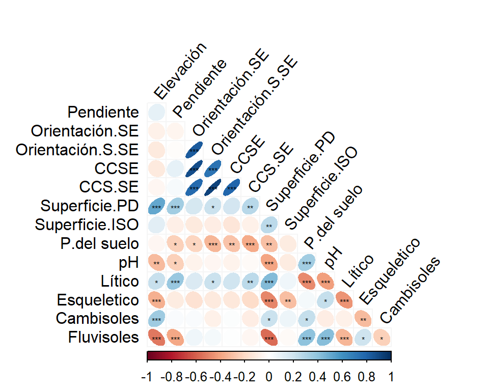
Figura 1: Resumen de las relaciones de las variables topológicas y topográficas usando el indice de correlación de Spearman: Los elipses azules inclinadas a la derecha representan las relaciones lineales positivas, mientras que las elipses rojas inclinadas a la izquierda representan las relaciones lineales negativas. El nivel de significancia se representa por medio de asteriscos (* = 0.05, ** = 0.01, 0.001 = ***).
Dado que los índices de carga calorífica son derivados de la pendiente y la orientación, presentan una estrecha relación lineal positiva. En la @fig-fig2 (A) se confirma esta relación entre las orientaciones sureste y sur-sureste. Al medir los valores de orientación en una magnitud escalar, que aumenta a medida que la orientación de las parcelas se aproxima a estas direcciones, puede ocurrir que dos parcelas con orientaciones diferentes tengan el mismo valor en una de las variables, al estar desviadas en la misma cantidad de grados respecto al noroeste. Sin embargo, en la orientación sur-sureste, los valores serían distintos, como se observa en la @fig-fig3. Por esta razón, en el gráfico se aprecia que cada valor en el eje x puede corresponder a dos valores en el eje y, lo que genera dos líneas de puntos en las partes superior e inferior de la línea de tendencia. La @fig-fig2 (B) muestra una estrecha relación entre las variables de carga calorífica para valores cercanos a 0, pero a medida que la carga calorífica del sureste aumenta, se observan valores más alejados de la línea de tendencia suavizada. Los datos que se desvían de los patrones generales podrían deberse a mediciones erróneas de las orientaciones o a situaciones particulares de algunas parcelas.
Código
g1 =ggplot(datos_env, aes(x = Orientación.SE , y = Orientación.S.SE)) +geom_smooth(aes(x = Orientación.SE, y = Orientación.S.SE), se = F, span =1, col ="blue") +geom_smooth(aes(x = Orientación.SE, y = Orientación.S.SE), se = F, span =1, col ="green", method ="glm") +geom_point(col ="orange") +labs(x ="Orientación Sureste",y="Orientación S-SE" , tag ="A)") +theme_classic() g2 =ggplot(datos_env, aes(x = CCSE , y = CCS.SE)) +geom_smooth(aes(x = CCSE, y = CCS.SE), se = F, span =1, col ="blue") +geom_smooth(aes(x = CCSE, y = CCS.SE), se = F, col ="green", method ="glm") +geom_point(col ="orange") +labs(x ="Indice de CC sureste", y ="Indice de CC S-SE", tag ="B)") +theme_classic()g1/g2include_graphics("C:\\Users\\Asus\\Desktop\\Analisis multivariado\\Informe-final-de-multivariada\\Graficos\\Explicaciones\\Orientación.png")
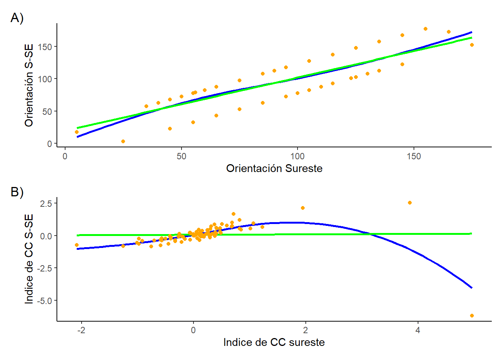
Figura 2: Relación de las variables de orientación y capacidad calorífica. A) Relación entre orientación Sur con la orientación Sur-Sureste. B)Relación entre el indice de capacidad calorífica.
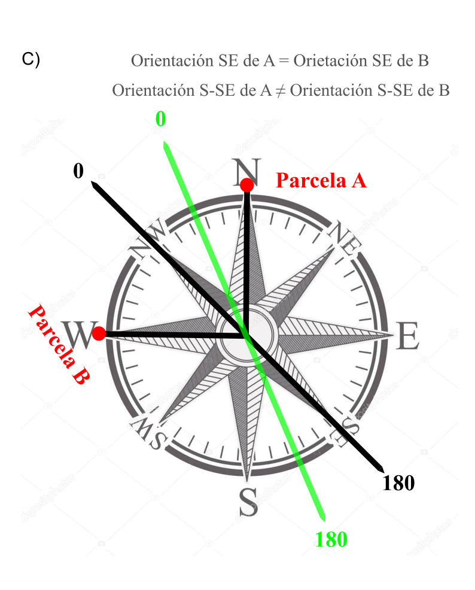
Figura 3: Relación de las variables de orientación y capacidad calorífica. A) Relación entre orientación Sur con la orientación Sur-Sureste. B)Relación entre el indice de capacidad calorífica.
Figura 4: Diagrama explicativo de las mediciones de orientación.
A partir de la Figura 5 se evidencia un claro patron de los tipos de superficies o relieves a favor de la pendiente, a medida que cambia la altitud, pues se observan más parcelas con relieve concavo en altitudes bajas que en altitudes altas, así mismo los relieves neutros son más comunes en altitudes intermedias y los relieves convexos más comunes en altitudes mayores, aunque el leve solapamiento de las muescas dan la posibilidad de que no hubiera diferencias significativas en la altitud de los relieves neutros y convexos.
Código
g3 =ggplot(datos_env,aes(x=factor(Superficie.PD),y=Elevación)) +geom_boxplot(aes(y= Elevación, fill =factor(Superficie.PD)), notch =TRUE) +theme_classic() +guides(fill ="none") +scale_x_discrete(labels =c("1"="Convexo", "0"="Neutro", "-1"="Concavo")) +labs( x ="Tipos de relieve a lo largo de la pendiente", y ="Elevación (M.S.N.M)")g3
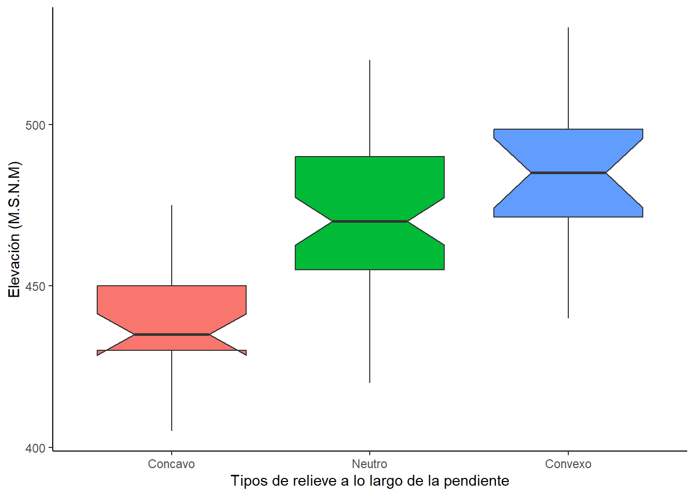
Figura 5: Comparación de las altitudes entre distintos tipos de superficie en las parcelas según el eje a favor de la pendiente.
También es posible observar cierto grado de diferencia en el tipo de suelo lítico y no lítico en diferentes altitudes, aunque podría no haber diferencias significativas en la Figura 6 se puede observar que en los diagramas de cajas bigotes la condición litica mantiene datos más concentrados a valores de mayor altitud que los no liticos.
Código
g4 =ggplot(datos_env,aes(x=factor(Lítico),y=Elevación)) +geom_boxplot(aes(y= Elevación, fill =factor(Lítico)), notch =TRUE) +theme_classic() +guides(fill ="none") +scale_x_discrete(labels =c("1"="Lítico", "0"="No Litico")) +labs(x ="Condición del lítica del suelo")g4
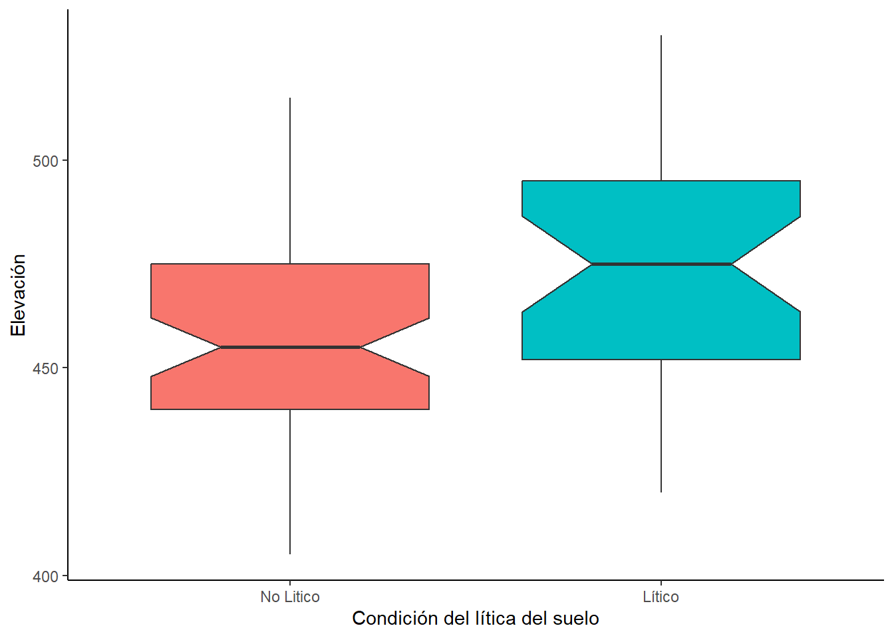
Figura 6: Comparación de las altitudes para las parcelas en suelos líticos y no líticos.
La condición de suelo Lítico también es dependiente del tipo de relieve, siendo que en las parcelas de relieve convexo son más frecuentes que los suelos no liticos, y en las parcelas con relieve neutro ya los suelos líticos son menos frecuente, y en los relieves concavos las parcelas con suelos no líticos son mucho más frecuentes que los líticos. Por lo tanto, los relieves convexos pueden favorecer el asentamiento de suelos líticos antes que de suelos no líticos, mientras que en los concavos pasa lo contrario.
Código
Sup.pd <-factor(datos_env$Superficie.PD, levels =c(1, 0, -1), labels =c("Convexo", "Neutro", "Cóncavo"))Pendiente.pd <-factor(datos_env$Lítico, levels =c(1, 0), labels =c("Lítico", "No Lítico"))factores <-paste(Sup.pd,Pendiente.pd, sep ="-")je <-c("Cóncavo-No Lítico", "Cóncavo-Lítico","Neutro-No Lítico","Neutro-Lítico","Convexo-No Lítico" , "Convexo-Lítico")datos_env$factores <-factor(factores, levels = je)frecuencia_factores <-as.data.frame(table(datos_env$factores))frecuencia <- frecuencia_factores$Freqbarplot(frecuencia, main ="Comparación frecuencias de relieves y suelos líticos", ylab ="Frecuencia", col =rep(c("blue","orange"), times =3), border ="black", cex.names =0.7,width =2.5, names.arg = je, space =1)
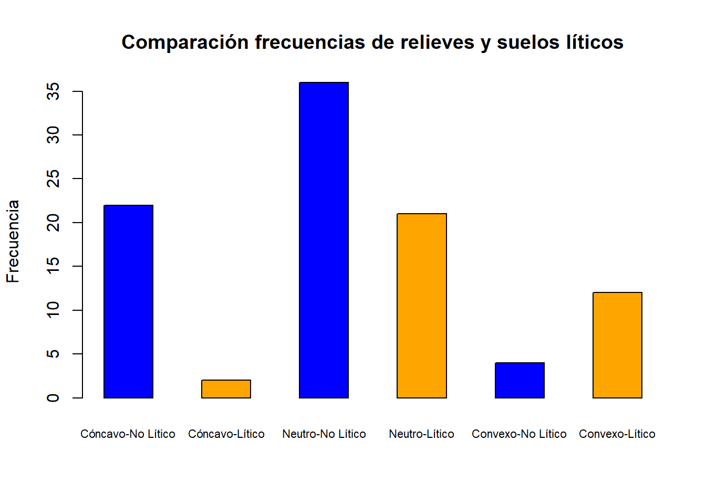
Figura 7: Frecuencias de las parcelas con distintos tipos de superficie según el eje a favor de la pendiente y si presenta o no el tipo de suelo lítico.
-Relación entre variables topográficas y topológicas con las condiciones de habitat (indices de Hellinberg).
En el correlograma presentado en la Figura 8 observamos los grados de correlación entre las variables topográficas y topológicas con las variables ambientales medidas de manera indirecta con el promedio de indices de hellinberg en cada parcela, entonces habrían seis indices, una por cada variable representandose numericamente en las mismas escalas. De las seis variables cinco se relacionan de manera significativa con las variables de orientación y carga calorifica de las cuales la luz, la temperatura y la continentalidad se relacionan positivamente, mientras que la humedad y los nutrientes se relacionan negativamente, estas relaciones se ven más detalladas en los diagramas de dispersión de la Figura 9 (A-D). Por lo tanto la orientación y la capacidad calorifica de la parcela pueden ser determinantes para la variación en las condiciones de habitats entre las parcelas.
Figura 8: Resumen de las relaciones de las variables topológicas y topográficas con los indices de Hellinberg usando el indice de correlación de Spearman: Los elipses azules inclinadas a la derecha representan las relaciones lineales positivas, mientras que las elipses rojas inclinadas a la izquierda representan las relaciones lineales negativas. El nivel de significancia se representa por medio de asteriscos(* = 0.05, ** = 0.01, 0.001 = ***).
Entonces si se toma a los indices de hellinberg como medidas indirectas de las condiciones de habitat y vemos como estás se relacionan con las variables topográficas y topologias, podriamos determinar dos grupos de variables, de las cuales uno se conforma por la luz ,temperatura y continentalidad mientras el otro se conforma por la humedad, reactividad y nutrientes, de modo que si un grupo se relaciona positivamente con una de las variables topológicas y topográficas positiva o negativamente, el otro podría relacionarse de manera contraria o no relacionarse. Caso en los que una variable se relaciona con uno de estos dos grupos pero no con el otro estaría la inclinación de la pendiente de las parcelas y el pH de las muestras de suelo, pues la inclinación de la pendiente se relaciona negativamente con la humedad, reactividad y nutrientes, pero no mostraría ningún tipo de correlación con la luz, temperatura y continentalidad (Figura 9(F) y Figura 8) . Por otro lado, el pH diluido de muestras de suelo también se relacionan significativamente con el mismo grupo de variables pero de manera positiva, y tampoco tienen un grado de correlación considerable con la luz, temperatura y continentalidad (Figura 9(E) y Figura 8).
Código
include_graphics("C:\\Users\\Asus\\Desktop\\Analisis multivariado\\Informe-final-de-multivariada\\Graficos\\Excel\\Ellenberg vs ambientales.svg")
Figura 9: Relación de variables topográficas y topolagicas contra los indices de Hellinberg.A) Relación entre continentalidad, temperatura y luz con la orientación sur-sureste. B) Relación entre humedad, reactividad y nutrientes con la orientación sur-sureste, C)Relación entre continentalidad, temperatura y luz con la capacidad calorifica sur-sureste. D)Relación entre humedad, reactividad y nutrientes con la capacidad calorifica sur-sureste, E)Relación entre humedad, reactividad y nutrientes con el pH diluido de las muestras de suelo. F)Relación entre humedad, reactividad y nutrientes con la pendiente de la parcela.
El tipo de relieve también tiene una influencia significativa sobre la humedad, reactividad y nutrientes, aunque las correlaciones solo son considerables para la humedad y nutrientes, esta relación queda mejor evidenciada en la Figura 10(A-B), donde se observa una clara tendencia en la que los valores de humedad y nutrientes se distribuyen en valores más altos, seguidos por el relive neutro, y el relieve convexo que mantiene una distribución en valores más bajos. También se observa que los suelos con condiciones de fluvisoles tendian a tener datos concentrados en valores de humedad más altos que los que no tenian condiciones de fluvisoles. Figura 10(C).
Código
include_graphics("C:\\Users\\Asus\\Desktop\\Analisis multivariado\\Informe-final-de-multivariada\\Graficos\\Excel\\Boxplot_ Ellenberg vs ambientales.svg")
Figura 10: Comparación los indices de Hellinberg en distintas condiciones topográficas.A)Comparación del indice de humedad entre distintos tipos de superficie.B)Comparación del indice de nutrientes entre distintos tipos de superficie.C)Comparación del indice de humedad entre suelos líticos y no líticos.
2. Determinar las diferencias entre los tipos de vegetación de plantas en los valles profundos del río Moldavia en función de sus condiciones ambientales, riqueza, cobertura vegetal y composición.
-Diferencias en la altitud y orientación de las parcelas de acuerdo a los tipos de vegetación de plantas
En la Figura 11 se observa que los vegetación tipo 1 exhibe una orientación mayoritaria hacia el noroeste, con una distribución altitudinal amplia que varía entre 425 y 525 m.s.n.m. los vegetación tipo 2, por su parte, se distribuye tanto al norte como al noroeste y suroeste, con altitudes que oscilan entre 430 y 490 m.s.n.m. En cuanto a los vegetación tipo 3, esta presenta un rango de elevación, que va de 425 a 500 m.s.n.m., con una orientación predominante hacia el suroeste y el norte. Por último, los vegetación tipo 4 tiene un rango de distribución más limitado en cuanto a su elevación, con datos que se sitúan entre 400 y 450 m.s.n.m., y una orientación un poco más homogénea.
Código
dirección <-ifelse((datos_env$Orientación.S.SE-datos_env$Orientación.SE <0),yes = datos_env$Orientación.SE*-1 , no = datos_env$Orientación.SE)# Crear el gráficoggplot(datos_env) +geom_point(aes(x = dirección, y = datos_env$Elevación, shape =factor(datos_env$Grupos), colour =factor(datos_env$Grupos)), size =2.5) +coord_polar(start =2.35619 ,direction =1) +# Transforma el gráfico en circulartheme_minimal() +labs(title ="Distribución de los TC en altitud y orientación",x ="Orientación",y ="Altitud", colour ="TC",shape ="TC") +scale_x_continuous(limits =c(-180,180), breaks =c(-45,45,135,-135), labels =c("O","N","E","S"), minor_breaks =c(-90,0,90,180)) +# Ejes con direcciones cardinalestheme(legend.position ="right") +scale_y_continuous(limits =c(380, 540), breaks =c(400,425,450,475,500,525,550)) +# Dejar un espacio en el centrotheme_light()
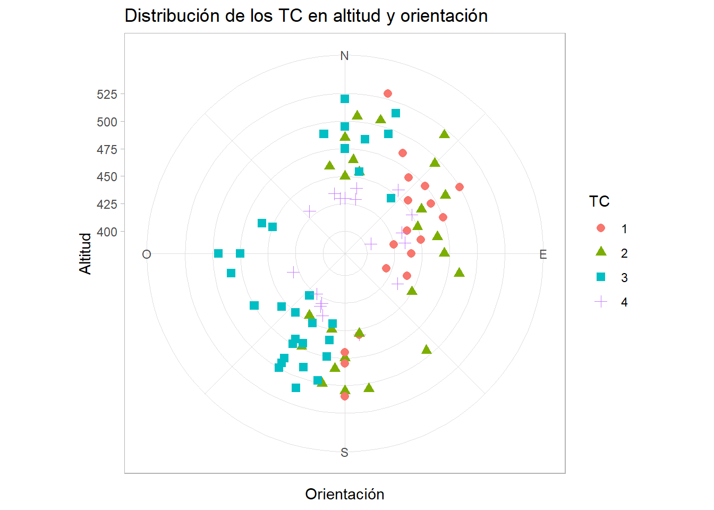
Figura 11: Distribución de los tipos de emsamblajes vegetales en relación con la orientación y la altitud. El círculo central representa el fondo del valle, el margen exterior representa el borde superior del valle y la dirección desde el centro representa la dirección hacia la que se orientan las laderas. Los tipos de puntos corresponden a los tipos de vegetación.
-Diferencias en las condiciones ambientales,riqueza y coberturas entre los tipos de vegetación de plantas
La Figura 10 muestra el patrón de variación de algunas variables topológicas y topográficas entre los diferentes tipos de vegetación evaluados. Se observa que los mayores valores de luz y temperatura se registraron en el ensamblaje tipo 1, seguido por el tipo 2, mientras que los menores valores correspondieron a el tipo 3. Sin embargo, las muescas de las cajas para la luz y la temperatura se solapan entre los tipos de vegetación 1, 2 y 4, lo que sugiere que la posibilidad de no diferencias entre estos grupos. En contraste, las muescas del ensamblaje tipo 1 no se solapan con las de los demás tipos, lo que podría insinuar diferencias ente estos tipos de vegetación.En cuanto a la continentalidad, se observa un patrón decreciente desde el ensamblaje tipo 1 hasta el tipo 4, siendo el ensamblaje tipo 1 el que presenta los valores más altos. Los vegetación tipo 3 y 4 muestran valores menores; y mostrando solapamiento en sus muescas; sin embargo, en el ensamblaje tipo 4 se identifica un valor atípico mayor, que podría estar sesgando los resultados.
A pesar del patrón decreciente de la continentalidad en los los vegetación de plantas vegetales, en sentido 1→ 4, existe un solapamiento de las muescas entre los tipos de (1 y 2), (2, 3 y 4), (3 y 4) lo que podría sugerir falta de diferenciación en la continentalidad entre estos grupos, y un posible anidamiento en esta variable.Los valores más altos de nutrientes se registraron en las vegetaciones tipo 4 y 3, respectivamente, sin aparentes diferencias entre estos dos grupos, aunque en el tipo 4 los datos presentaron menor dispersión. Por otro lado, las muescas de las vegetaciones tipo 1 y 2 no se superponen con las del grupo 3 ni con las del grupo 4, lo que podría inferir posibles diferencias en la cantidad de nutrientes entre estos tipos. Sin embargo, no se encontraron posibles diferencias entre los grupos 1 y 2 debido al solapamiento de sus muescas.
Respecto a la humedad, se identificaron valores más altos en los vegetación tipo 4, los cuales sugieren ser diferentes en comparación con los demás tipos, dado que sus intervalos de confianza (muescas) no se solapan. Por su parte, aunque las vegetaciones tipo 1 y 2, así como los tipos 2 y 3 presentaron medianas diferentes, sus intervalos de confianza se superponen; por lo tanto, no se sugieren diferencias entre estos pares de grupos. Sin embargo, sí se sugiere diferencias entre los grupos 1 y 3.Finalmente, con relación a la reactividad, los mayores valores se observaron en los vegetación tipo 4. No obstante, las muescas de este grupo se solapan con las de las vegetaciones tipo 1 y 3, por lo que posiblemente se podría considerar la no existencia de diferencia entre estos. En contraste, los vegetación tipo 2 presentó los menores valores de reactividad y sugiere una posible diferencia con respecto a los demás tipos debido a que sus intervalos de confianza no se solapan con ninguna otra caja del gráfico.
Código
f1 =ggplot(datos_env,aes(x=factor(datos_env$Grupos),y= datos_env$Luz)) +geom_boxplot(aes(fill =factor(datos_env$Grupos)), notch =TRUE) +theme_classic() +guides(fill ="none") +labs( x ="Tipos de vegetación", y ="Luz", tag ="A)")f2 =ggplot(datos_env,aes(x=factor(datos_env$Grupos),y= datos_env$Nutrientes)) +geom_boxplot(aes(fill =factor(datos_env$Grupos)), notch =TRUE) +theme_classic() +guides(fill ="none") +labs( x ="Tipos de vegetación", y ="Nutrientes", tag ="B)")f3 =ggplot(datos_env,aes(x=factor(datos_env$Grupos),y= datos_env$Temperatura)) +geom_boxplot(aes(fill =factor(datos_env$Grupos)), notch =TRUE) +theme_classic() +guides(fill ="none") +labs( x ="Tipos de vegetación", y ="Temperatura", tag ="c)")f4 =ggplot(datos_env,aes(x=factor(datos_env$Grupos),y= datos_env$Humedad)) +geom_boxplot(aes(fill =factor(datos_env$Grupos)), notch =TRUE) +theme_classic() +guides(fill ="none") +labs( x ="Tipos de vegetación", y ="Humedad", tag ="D)") f5 =ggplot(datos_env,aes(x=factor(datos_env$Grupos),y= datos_env$Continentalidad)) +geom_boxplot(aes(fill =factor(datos_env$Grupos)), notch =TRUE) +theme_classic() +guides(fill ="none") +labs( x ="Tipos de vegetación", y ="Continentalidad", tag ="E)")f6 =ggplot(datos_env,aes(x=factor(datos_env$Grupos),y= datos_env$Reactividad)) +geom_boxplot(aes(fill =factor(datos_env$Grupos)), notch =TRUE) +theme_classic() +guides(fill ="none") +labs( x ="Tipos de vegetación", y ="Reactividad", tag ="F)")(f1 + f2)/(f3+f4)/(f5+f6)
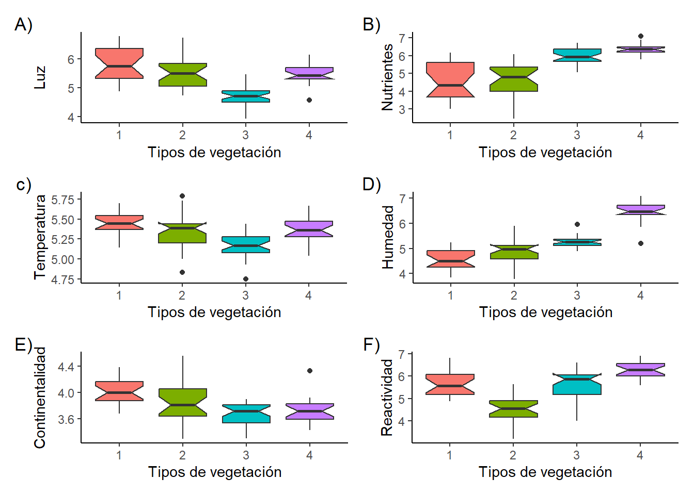
Figura 12: Variación de las variables topológicas y topográficas en los cuatro tipos de vegetación evaluados. A) Comparación del índice de luz entre los distintos tipos vegetación. B) Comparación del índice de temperatura entre los distintos tipos de vegetación. C) Comparación de la continentalidad entre los distintos tipos de vegetación. D) Comparación del índice de nutrientes entre los distintos tipos de vegetación. E) Comparación del índice de humedad entre los distintos tipos de vegetación. F) Comparación del índice de reactividad entre los distintos tipos de vegetación.
-Selección de las 15 especies más abundantes
Se convierten los porcentajes de cobertura de cada especie a valores en metros cuadrados ($m^2$) para, posteriormente, seleccionar las 15 especies con mayor cobertura. Luego, se determina cuánto contribuye en cobertura cada una de estas especies en los diferentes tipos de vegetación de plantas.
Conversión del porcentaje de cobertura a área de cobertura:
Código
#Seleccionamos las 15 especies más abundantes Suma <-data.frame(colSums(datos_bio))Suma <- Suma %>%arrange(desc(Suma$colSums.datos_bio.))fifteen_Species <-row.names(Suma)fifteen_Species <- fifteen_Species[1:15]datos_bio1 <- datos_bio[,fifteen_Species]#Transformamos los valores a m^2 de coberturadatos_bio1 <- datos_bio1 *150/100#Area de cada parcela sobre el 100%datos_bio1 <-data.frame(datos_bio1)datos_g <-cbind(datos_bio1,datos_env) #unimos con las variables ambientales
Transformamos las condiciones de suelo de variables dicotómicas y tricotómicas a variables categóricas.
Determinamos la cantidad de cobertura por especie, tanto de forma general como para cada tipo de comunidad.
Código
datos_resum <-melt(datos_g1[,c(1:15,39)])datos_resum1 <- datos_resum %>%# Base de datos resumidagroup_by(Grupos,variable) %>%# Factor o variable agrupadorasummarise(datos.sum =sum(value)) # Error estándar de cada grupodatos_resum2 <- datos_resum %>%# Base de datos resumidagroup_by(variable) %>%# Factor o variable agrupadorasummarise(datos.sum =sum(value)) # Error estándar de cada grupocolnames(datos_resum2) <-c("Especies", "Area de cobertura m^2")datos_resum2 %>%kbl(caption ="", booktabs = F, longtable = T) %>%kable_classic(full_width = F, html_font ="cambria")
Tabla 1: Área de cobertura en metros cuadrados \(m^2\) para cada especie en general.
Especies
Area de cobertura m^2
Tilicor1
1666.5
Coryave4
1270.5
Querpea1
988.5
Abiealb1
828.0
Fagusyl1
760.5
Sambnig4
598.5
Acerpse1
457.5
Dryofil6
450.0
Galemon6
372.0
Lunared6
360.0
Alnuglu1
358.5
Acerpla1
313.5
Calaaru6
298.5
Impapar6
295.5
Tilicor4
274.5
-Comparación del area de cobertura contribuida por las 15 especies más representativas en la totalidad de las parcelas
La Figura 13 ilustra el área de cobertura que ocupa cada especie y cómo varía esta entre los diferentes tipos de vegetación. Se observa que las especies que más contribuyen a la cobertura (m²), en orden de importancia, son Tilicor1, Coryave4, Querpea1, Abiealb1, Fagusyl1 y Sambrig4. La contribución de cobertura de Tilicor1 se distribuyó de manera similar en los tipos de ensamblaje 1, 2 y 4, mientras que fue menor en el tipo 3. Para Coryave4, los tipos de vegetación que más aportaron a la cobertura fueron los tipos 3 y 4, con contribuciones similares. En el caso de Querpea1, la mayor contribución provino del tipo de vegetación 2, seguida por el tipo 1. En cuanto a Abiealb1, la mayor contribución se registró en los vegetación tipo 3, y se notó que el tipo 4 no aportó nada a esta especie. Por último, para las especies Fagusyl1 y Sambrig4, la mayor contribución también se observó en los vegetación tipo 3.
Figura 13: Áreas de cobertura total de las especies más representativas en general y por cada tipo de ensamblaje en los valles profundos del río de Moldavia.
3. Evaluar la influencia de las variables ambientales sobre la variación de la composición de los vegetación de plantas en los valles profundos del río Moldavia.
Mediante un correlograma se pueden observar de forma general las relaciones entre variables topográficas y biologicas, observando la fuerza de la relación y su sentido. En la Figura 14 se puede observar que en general las correlaciones entre parámetros topográficos y biologicas fueron débiles, siendo aproximadamente la mitad de ellas positivas y negativas, dentro de estas relaciones, destaca de forma moderada la relación entre la luz y Abieal1. Por otro lado, dentro de las relaciones débiles de forma negativa, las menos débiles, o sea, las que presentaron valores mayores en ese rango, se dieron entre la luz con Dryofil6, Lunared6 y Galemon6. La temperatura con Abieal1, Dryofil6 y Lunared6. Mientras que, de manera positiva débil destacó la relación entre los nutrientes con Querpea1, Sambrig4, Galemon6, Lunared6, Alnuglu1 e Impapar6. Reactividad con Galemon6 y reactividad con Alnuglu1.
Código
m <-cor(y = datos_bio1, x = ellin , method ="spearman") #correlación entre topográficas.corrplot(m,method ="ellipse", order ="original",tl.col ="black",addCoef.col= T, cl.pos = T,pch.cex =0.5, pch.col ="black",tl.cex =1.0, number.cex =0.9, cl.cex =0.8,addgrid.col ="#f5f5f5")
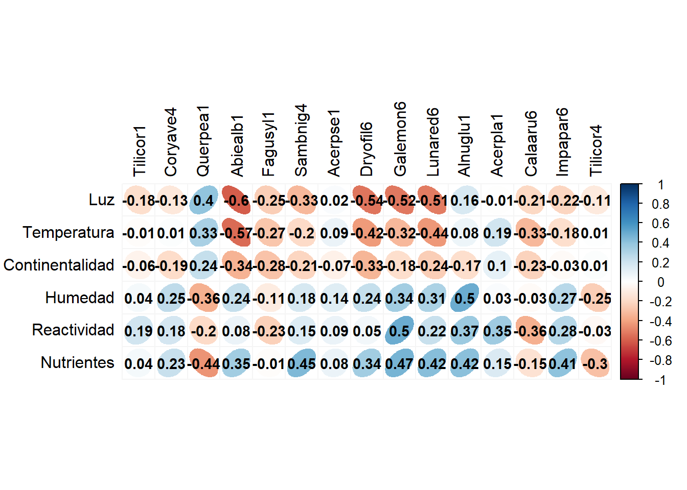
Figura 14: Resumen de las relaciones entre las especies y las condiciones de hábitat en los Valles profundos de Moldavia, usando el índice de correlación de Spearman: Las elipses azules inclinadas a la derecha representan las relaciones lineales positivas, mientras que las elipses rojas inclinadas a la izquierda representan las relaciones lineales negativas.
En la Figura 15 se observan la relación entre las variables topográficas y las especies en los valles profundos de Moldavia, utilizando el método de Spearman. Se puede analizar que la gran mayoría de las relaciones que se presentaron fueron débiles, siendo que, dentro de estas, las negativas fueron más frecuentes. Dentro de las relaciones débiles positivas destacan la orientación hacia el sur-suroeste con Abielb1, Lunared6 y Dryofil6. La capacidad de carga caloríca en la orientación sur-suroeste con Abielb1, Dryofil6 y Lunared6. En cuanto a las relaciones débiles positivas, destaca la elevación y Fasugy1, Mientras que la única relación fuerte positiva se presento entre los fluvisoles y Alnuglu1.
Código
c <-cor(y = datos_bio1, x = topo , method ="spearman") #correlación entre topográfica.corrplot(c,method ="ellipse", order ="original",tl.col ="black",addCoef.col= T, cl.pos = T,pch.cex =0.5, pch.col ="black",tl.cex =1.0, number.cex =0.5, cl.cex =0.8,addgrid.col ="#f5f5f5")
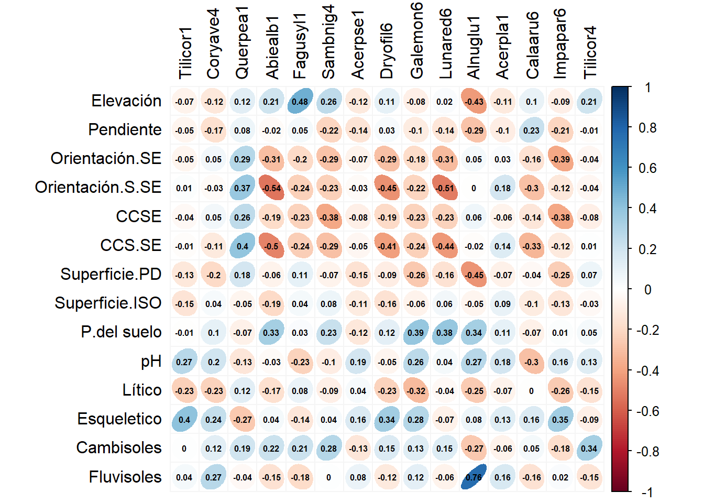
Figura 15: Resumen de las relaciones entre las especies y las variables topográficas de los Valles profundos de Moldavia, usando el índice de correlación de Spearman: Las elipses azules inclinadas a la derecha representan las relaciones lineales positivas, mientras que las elipses rojas inclinadas a la izquierda representan las relaciones lineales negativas.
En la Figura 16 se observa la relación entre la cobertura de Abies alba y el índice de luz, mostrando una correlación negativa. A medida que disminuyen los valores de luz, se registran mayores coberturas de la especie, mientras que con un aumento en la luz, la presencia de la especie disminuye, sugiriendo una tendencia logarítmica. Además, se destaca que los menores valores de luz, y por lo tanto de cobertura de la especie, se presentan en el ensamblaje tipo 3.
Código
f1 <-ggplot(datos_g,aes(x = Luz, y = Abiealb1)) +geom_smooth(method ="loess",se = F, span =1) +geom_smooth(method ="lm",se = F, col ="red") +geom_point(aes(colour =factor(Grupos))) +theme_classic() +scale_color_manual(values =c("1"="#d73027","2"="blue","3"="#1a9850", "4"="#c51b8a")) +scale_y_continuous(limits =c(0,75)) +labs(x ="Luz", y ="Porcentaje de cobertura de Abies alba")f1
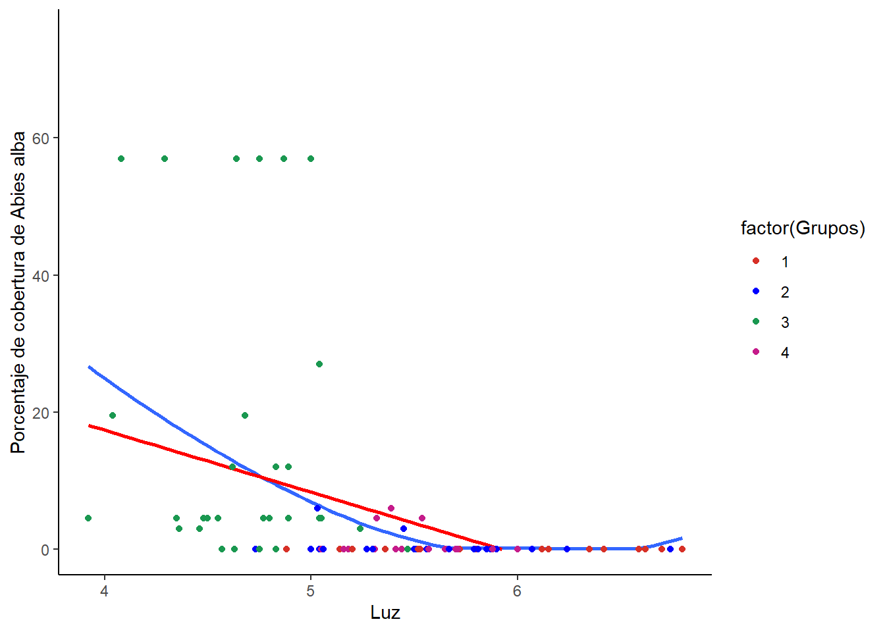
Figura 16: Relación entre la cobertura de la especie Abies alba con respecto a la variable de Luz.
Referencias
Ayoub-Hannaa, W., Huntley, J. W., & Fürsich, F. T. (2013). Significance of Detrended Correspondence Analysis (DCA) in palaeoecology and biostratigraphy: A case study from the Upper Cretaceous of Egypt. Journal of African Earth Sciences, 80, 48-59. https://doi.org/https://doi.org/10.1016/j.jafrearsci.2012.11.012
Blažková, D. (1964). Rozčlenění vegetace na údolních svazích v oblasti Orlické nádrže [Pattern of distribution of plant communities in the area of Orlík reservoir]. En J. Jeník (Ed.), Vegetační problémy při budování vodních děl [Vegetation issues related to the construction of water reservoirs] (pp. 21-37). NČSAV.
Ellenberg, H. (1974). Zeigerwerte der Gefäßpflanzen Mitteleuropas. En Scripta Geobotanica (Vol. 9, pp. 1-97).
Ellenberg, H. (1979). Zeigerwerte der Gefäßpflanzen Mitteleuropas. 2. Aufl. En Scripta Geobotanica (Vol. 9, pp. 1-122).
Li, Y., Qiu, Y., & Xu, Y. (2022). From multivariate to functional data analysis: Fundamentals, recent developments, and emerging areas. Journal of Multivariate Analysis, 188, 104806. https://doi.org/https://doi.org/10.1016/j.jmva.2021.104806
Palacio, F., Apodaca, M., & Crisci, J. (2020). ANÁLISIS MULTIVARIADO PARA DATOS BIOLÓGICOS Teoría y su aplicación utilizando el lenguaje R.
Rodríguez-Barrios, J. (2022). Análisis de datos ecológicos y ambientales: aplicaciones con programa R. Ediciones Díaz de Santos.
Türk, W. (1994). Das «Höllental» im Frankenwald – Flora und Vegetation eines floristisch bemerkenswerten Mittelgebirgstales. Tuexenia, 14, 17-52.
Zelený, D., & Chytry, M. (2007). Environmental control of vegetation pattern in deep river valleys of the Bohemian Massif. Preslia -Praha-, 79, 205-222.